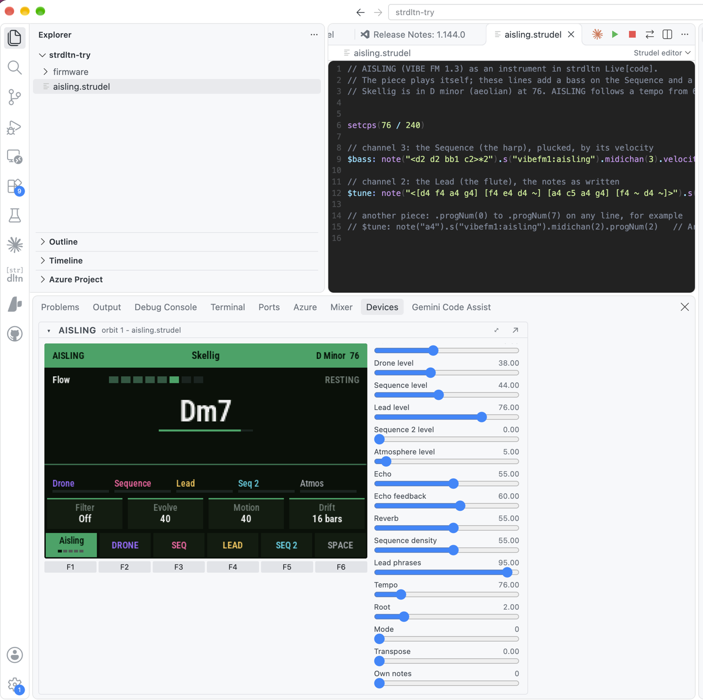

strudel · AISLING in VS Code
AISLING for VIBE FM 1.3, in strdltn Live[code]
Strudel
AISLING as an instrument you write lines for.
The piece plays itself. Your lines of Strudel add a bass on the harp and a tune on the flute.
Setting up
Set it up
strdltn Live[code] is an extension that runs Strudel in VS Code and plays VIBE FM firmwares as its sounds. AISLING for VIBE FM is one of them. No FM-1 is needed.
- Install strdltnIt is a .vsix file from its GitHub page. In VS Code: Extensions, the … menu, Install from VSIX.
- Make a folderOpen a new folder in VS Code, and in it make a folder called firmware.
- Add AISLINGPut aisling.wasm from the latest VIBE release in the firmware folder. The sound is named after the file: vibefm1:aisling.
- Write a fileA file ending .strudel, with the lines below in it.
- Press playThe green triangle at the top of the editor. The first press asks to enable audio.
- Open DevicesIn the bottom panel, the Devices tab shows AISLING's screen, and Mixer your lines' levels.

The lines
Write lines for the layers
The MIDI channel chooses the layer. Channel 3 plucks the harp, channel 2 plays the flute, and the piece goes on under both.
// Skellig is in D minor at 76
setcps(76 / 240)
// channel 3: the Sequence (the harp), plucked, by its velocity
$bass: note("<d2 d2 bb1 c2>*2").s("vibefm1:aisling").midichan(3).velocity(0.8)
// channel 2: the Lead (the flute), the notes as written
$tune: note("<[d4 f4 a4 g4] [f4 e4 d4 ~] [a4 c5 a4 g4] [f4 ~ d4 ~]>").s("vibefm1:aisling").midichan(2)
| On the line | What it does |
|---|---|
| .midichan(1) | The Lead, moved to the nearest note of the piece's scale. Channels 5 to 16 do the same. |
| .midichan(2) | The Lead, the notes exactly as written. |
| .midichan(3) | The Sequence, plucked, the notes as written. |
| .midichan(4) | Sequence 2, the same. It is silent in a piece that has none: Skellig, for one. |
| .velocity(0 to 1) | How hard a Sequence is plucked. |
| .progNum(0) to .progNum(7) | The piece: Skellig, Burren, Aran, Carolan, Blasket, Samhain, Connemara, Tir na nOg. |
- The Lead gives way. It stops its own phrase when you play it and takes it up again two bars after you stop.
- The Sequences keep their own notes unless you hold them back with the Own notes slider (below).
- The Drone and the Atmosphere always play. They take no notes.
- Tempo. AISLING follows Strudel's from 60 to 160. Outside that it stays at the nearest end.
The Devices tab
AISLING's screen and its sliders
The Devices tab shows what a VIBE FM shows: the piece, its key and tempo, the chord sounding and the five layers. Beside it, every parameter is a slider.
| Slider | What it is |
|---|---|
| Own notes | Holds back the notes the piece plays by itself on the Sequence, on Sequence 2 or on both, so only yours sound there. |
| The five levels | Drone, Sequence, Lead, Sequence 2 and Atmosphere. Turn a layer down to leave room for your line. |
| Echo, Reverb | The piece's own echo and reverb. These are the effects to use. |
| Tempo, Root, Mode, Transpose | The piece's key and time, as on the FM-1. |
F1 to F6 under the screen choose a layer's pages, as the six page keys do on a VIBE FM.
Limits
What it can't do
Strudel's own effects stop at the firmware's door.
- Effects written on the line (.room(), .delay() and the like) do not reach a firmware. Use AISLING's Echo and Reverb sliders.
- This is the VIBE FM build, not the FM-1's: it has no sound packs and no Patch voices. Its own page is on GitHub.
- The same firmware plays in a DAW through the VIBE FM plug-in from The Firmware Hub, with the same channels from a MIDI clip.
Tried here · strdltn 0.4.1 in VS Code on a Mac, with AISLING for VIBE FM 1.3 as aisling.wasm in the firmware folder and the lines above: it loads, the Devices tab shows the screen and the sliders, and the bass and the tune are heard over Skellig. The channels were also played from a clip in the VIBE FM plug-in in Ableton Live 12.
Not tried here · Loading it by a web address with strdltn's firmware('…/aisling.zip') line in place of the file. Windows and Linux. Other versions of strdltn.
strdltn Live[code] is by alienmind: github.com/alienmind/strdltn. Strudel is its own project, at strudel.cc. Questions about them go to their authors.